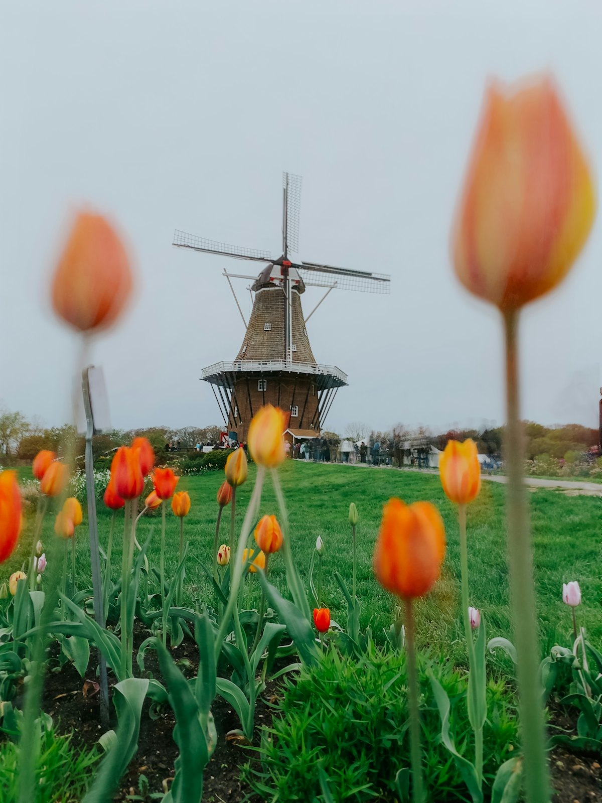
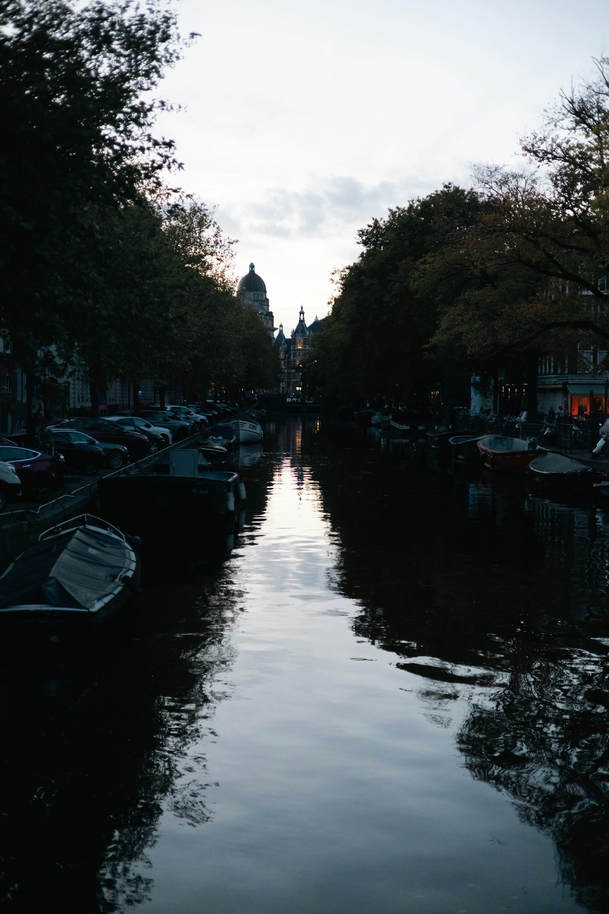
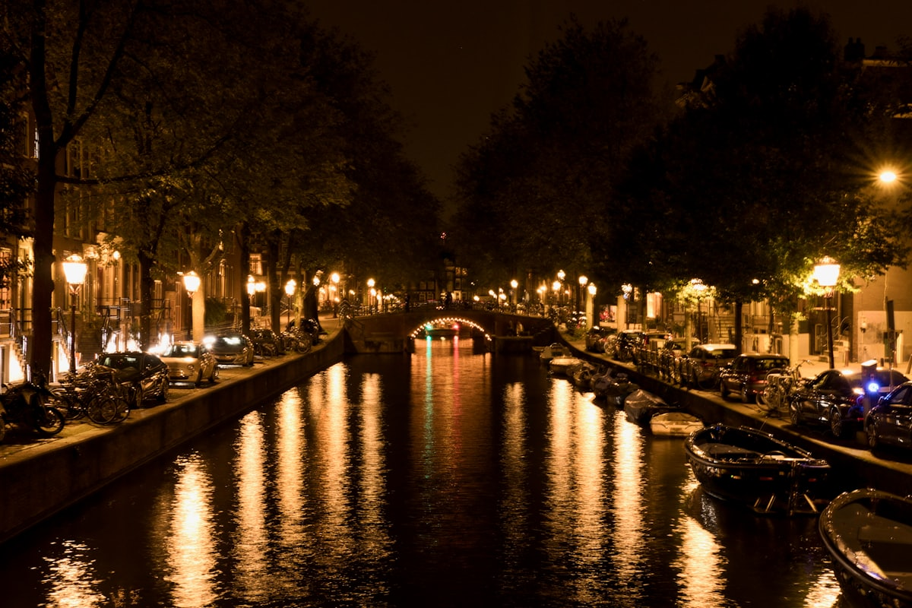
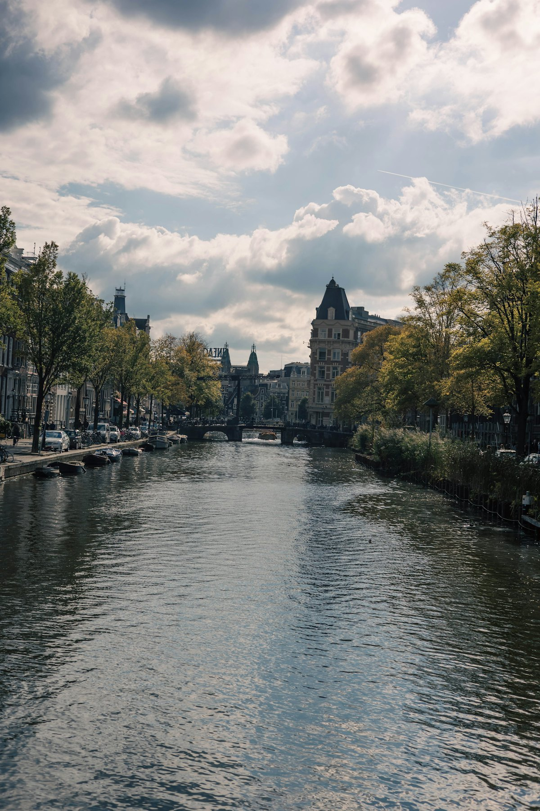
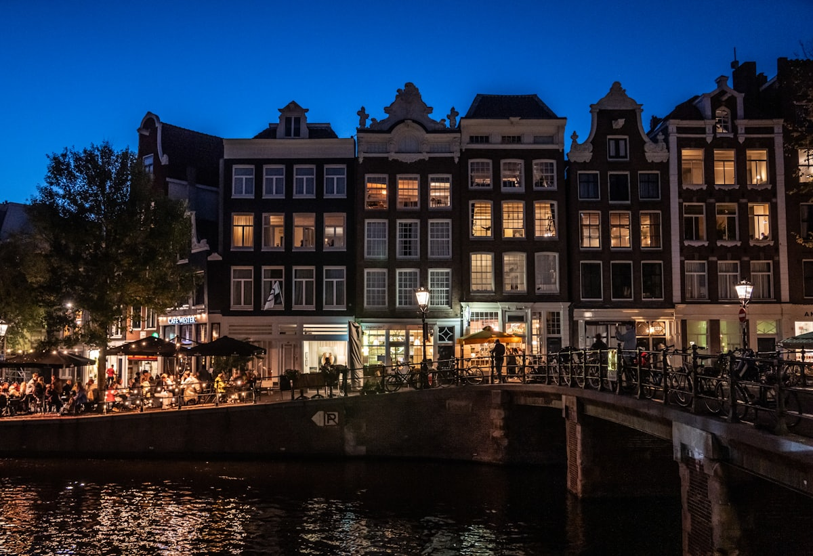
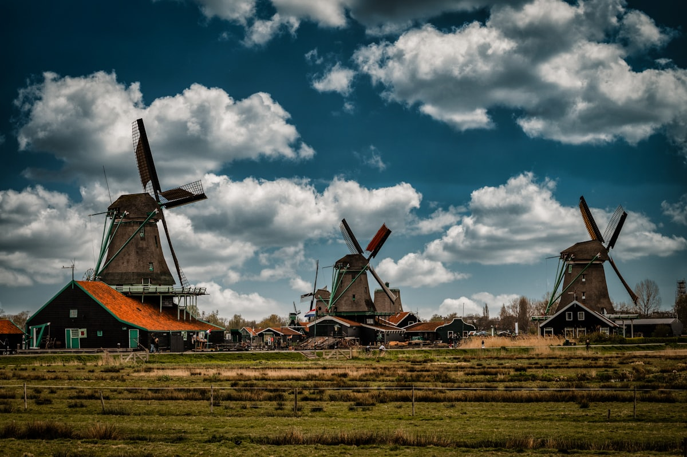
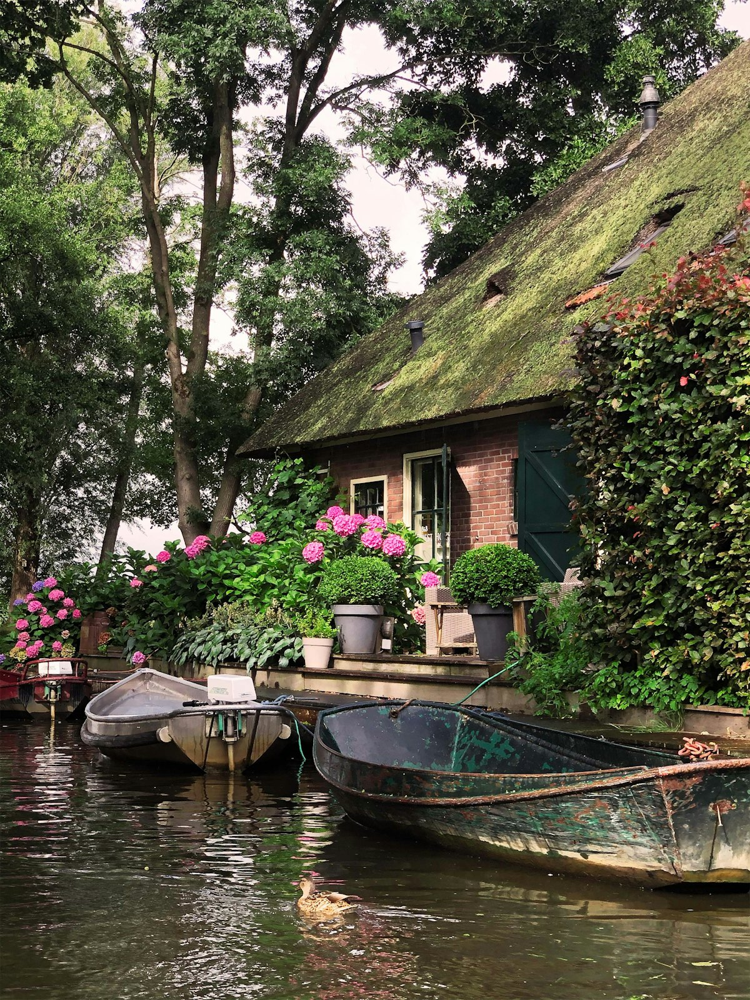
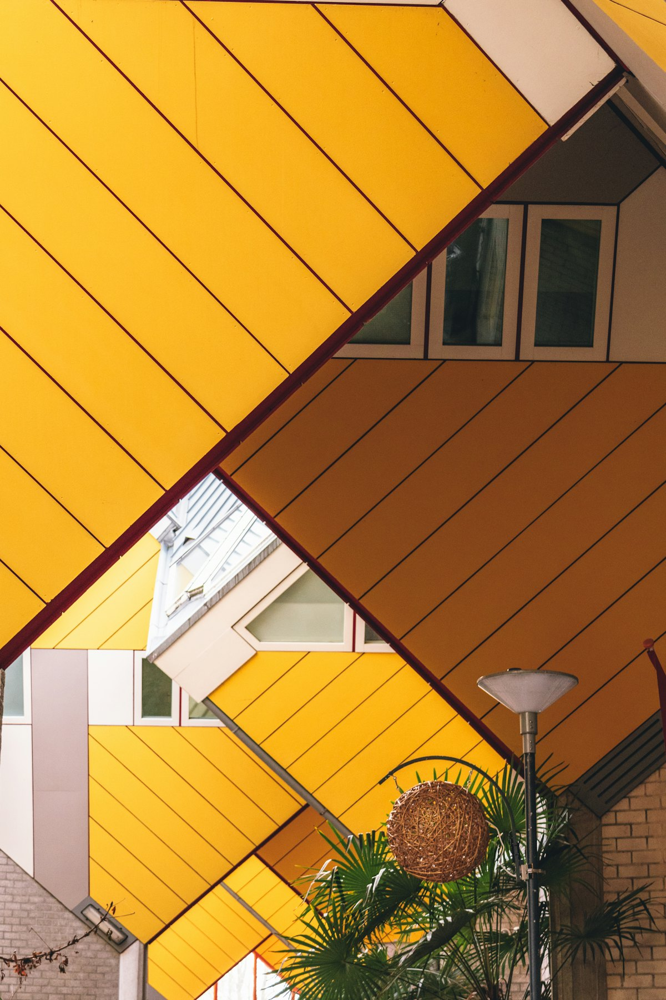

| 事项 | 结论 |
|---|---|
| 事项 | 结论 |
| 签证（最关键） | 中国护照需办申根签证（荷兰递签）；通过领馆/中智中心预约，建议提前 4–6 周，旺季更早 |
| 推荐方案 | 阿姆斯特丹 5 天（双馆+运河+红灯区）+ 桑斯安斯/羊角村各 1 天 + 鹿特丹/海牙 2 天 |
| 返程约束 | 第 9 天从海牙/阿姆斯特丹返程，晚间航班为主，预留 3 小时到机场 |
| 行程链 | 阿姆斯特丹 → 桑斯安斯风车村 → 羊角村 → 鹿特丹 → 海牙 → 返程 |
| 预算（人均） | 经济 10000–15000 ／ 标准 18000–26000 ／ 舒适 40000–55000（人民币） |
| 三件提前事 | ① 预约申根签证递签 ② 订梵高/国立/安妮之家分时票 ③ 订往返机票（直飞 KLM） |
| 季节提醒 | 3 月中–5 月中郁金香花季（库肯霍夫 3/19–5/10）；5–9 月最舒适；冬季运河可上冰 |
| 货币与电源 | 欧元 €（1€≈7.8 元）；时差 -6/-7h；230V C/F 型两圆脚插座，需带转接头 |
以下为 9 天 8 晚的推荐节奏：前 5 天阿姆斯特丹（两馆分开安排避免审美疲劳），后 4 天两乡两城。每日主景点 ≤2 个，城际交通以 NS 火车 + OVpay 为主。
| 日期 | 行程 | 过夜地 | 主题 |
|---|---|---|---|
| D1 抵阿姆斯特丹 | 北京✈阿姆斯特丹（KLM 直飞约 12.5h），入住市中心，傍晚运河边散步 | 阿姆斯特丹 | 抵达+时差 |
| D2 | 梵高博物馆 → 国立博物馆（博物馆广场双馆日）→ 冯德尔公园 | 阿姆斯特丹 | 艺术双馆 |
| D3 | 运河游船 → 安妮之家 → 红灯区夜游（仅观瞻） | 阿姆斯特丹 | 运河与故居 |
| D4 | 自行车一日：约旦区 → 花卉市场 → 西教堂 → 运河带 | 阿姆斯特丹 | 骑行日 |
| D5 | 自由日：郁金香博物馆/伦勃朗故居/滑铁卢广场跳蚤市场 | 阿姆斯特丹 | 自由漫游 |
| D6 | 桑斯安斯风车村：风车+奶酪+木鞋工坊（当日往返） | 阿姆斯特丹 | 风车日 |
| D7 | 羊角村：威尼斯式运河小镇，租船游水道（当日往返） | 阿姆斯特丹 | 水乡日 |
| D8 | 鹿特丹：立体方块屋 → 大市场 → 水上巴士到小孩堤防风车群 | 鹿特丹 | 现代建筑日 |
| D9 返程 | 海牙和平宫 → 莫瑞泰斯美术馆（可选）→ 返程航班 | — | 海牙+收尾 |
以下为 9 天全程的逐小时执行时间线，可当作「当天打开照着走」的清单。标注 ※ 的可选项视体力与天气取舍。
| 时间 | 事项 |
|---|---|
| 10:00–16:30 | 北京✈阿姆斯特丹史基浦机场（KLM 直飞约 12.5h）。机场下机过边检后，取行李 |
| 16:30–18:00 | 机场乘 NS 火车/机场快线到阿姆斯特丹中央车站（约 15–20 分钟），入住市中心酒店 |
| 18:30–20:30 | 水坝广场 + 阿姆斯特丹王宫外观（免费）→ 运河边散步，拍黄昏运河与桥洞 |
| 21:00 | 晚餐：荷兰煎饼（Pannenkoek）或薯条店，回酒店倒时差 |
| 时间 | 事项 |
|---|---|
| 08:30 | 按预约时段前往梵高博物馆（需提前网上购票，€25），在博物馆广场旁 |
| 09:00–11:30 | 梵高博物馆：向日葵、自画像、《星空》手稿，馆藏全球最大梵高收藏 |
| 11:30–13:00 | 博物馆广场午餐：荷兰薯条 + 三明治，广场上席地而坐 |
| 13:30–16:30 | 国立博物馆（需提前购票，€23.5）：伦勃朗《夜巡》、维米尔《倒牛奶的女仆》、黄金时代收藏 |
| 17:00–18:30 | 冯德尔公园（免费）散步，看本地人遛狗骑车，放松双馆疲劳 |
| 19:00 | 晚餐：约旦区小馆荷兰菜（Stamppot 土豆泥炖菜） |
| 时间 | 事项 |
|---|---|
| 09:00–10:30 | 运河游船（1 小时，约 €16–22，线上预订更便宜）：玻璃顶船穿行王子运河/皇帝运河/绅士运河 |
| 11:00–12:00 | 西教堂（免费外观）+ 约旦区漫步，这里曾是安妮藏身处所在街区 |
| 12:30–13:30 | 午餐：约旦区咖啡店 + 苹果派（荷兰名物） |
| 14:00–16:00 | 安妮之家（需提前预约，€16）：《安妮日记》真实写作地，密室藏身处，情感冲击强 |
| 18:00–21:00 | 红灯区（免费）：德瓦伦街区，夜晚霓虹+运河灯光，只观瞻不拍照，注意安全 |
| 21:30 | 晚餐：亚洲/荷兰混搭或回酒店休息 |
| 时间 | 事项 |
|---|---|
| 09:00–09:30 | 酒店附近租自行车（约 €10–15/天），选车况好的，戴好头盔 |
| 09:30–11:30 | 骑行约旦区 + 九街（免费）：运河砖房、独立小店、本地早餐 |
| 11:30–13:00 | 花卉市场 Bloemenmarkt（免费）：世界唯一水上花市，郁金香球茎可托运回国（需申报） |
| 13:00–14:00 | 午餐：市场附近小吃或生鲱鱼 Haring（荷兰特色，配洋葱一口闷） |
| 14:30–17:00 | 骑行运河带 + 阿姆斯特丹博物馆区，打卡瘦桥、伦勃朗故居外观 |
| 18:00 | 还车，晚餐：荷兰金酒 + 小食拼盘（苦艾酒/脆炸丸子） |
| 时间 | 事项 |
|---|---|
| 09:00–11:30 | 郁金香博物馆（€5.5）或 伦勃朗故居（€15，可选其一）：了解球茎热与黄金时代画家工作室 |
| 12:00–13:30 | 午餐：阿姆斯特丹唐人街附近，或小吃拼盘 |
| 13:30–16:00 | 滑铁卢广场跳蚤市场（免费）：二手黑胶、古董、纪念品，淘货乐趣 |
| 16:30–18:00 | 自由安排：购物街 PC Hooftstraat 名牌街 / NEMO 科技馆 / 咖啡馆放空 |
| 18:30 | 晚餐：海鲜餐厅（荷兰青口/牡蛎）或亚洲料理 |
| 时间 | 事项 |
|---|---|
| 08:30 | 中央车站乘火车到 Zaandijk Zaanse Schans 站（约 20 分钟） |
| 09:00–12:30 | 桑斯安斯风车村（免费进入）：5 座仍在运转的木制风车沿赞河排开，近看风车内部机械 |
| 12:30–13:30 | 午餐：风车村内荷兰煎饼 + 奶酪试吃（高德奶酪/埃丹奶酪） |
| 13:30–15:30 | 奶酪农场 + 木鞋工坊（免费/小费）：看传统木鞋制作过程，买迷你木鞋伴手礼 |
| 15:30–17:00 | 沿河步行或租自行车到周边风车点，赞河日落光线最佳 |
| 17:30 | 返程回阿姆斯特丹（火车 20 分钟），晚餐市区 |
| 时间 | 事项 |
|---|---|
| 07:30 | 中央车站乘火车到 Steenwijk 站（约 1h40m） |
| 09:30–10:00 | Steenwijk 换乘 70 路巴士（约 20 分钟）到羊角村 Dominee Hylkemaweg 站 |
| 10:00–12:30 | 羊角村（免费进入）：芦苇屋顶童话小屋 + 纵横水道，租静音电动船（约 €20–30/小时）自驾 |
| 12:30–13:30 | 午餐：河边餐厅荷兰煎饼/烤鱼（Kibbeling 炸鱼块是当地招牌） |
| 13:30–16:00 | 继续划船 + 步行：打卡 Binnenpad 木桥、看天鹅与水鸟，或租自行车环湿地 |
| 16:00–19:00 | 乘巴士+火车返回阿姆斯特丹，晚餐在市区 |
| 时间 | 事项 |
|---|---|
| 08:30 | 中央车站乘 IC 城际火车到鹿特丹（约 40 分钟） |
| 09:30–11:30 | 立体方块屋（外观免费，参观 €3）：Kubuswoningen 倾斜立方体住宅群 + 铅笔楼 |
| 11:30–13:00 | 大市场 Markthal（免费）：拱形穹顶市场，荷兰美食集中，午餐在此解决 |
| 13:30–14:00 | 步行到天鹅桥码头乘水上巴士 Waterbus 21 往小孩堤防（约 30 分钟） |
| 14:30–17:30 | 小孩堤防风车群（免费进入；风车套票约 €21）：19 座 UNESCO 风车沿堤排开，可进风车内部+坐观光船 |
| 18:00 | 返鹿特丹，晚餐：港口区海鲜，宿鹿特丹（比阿姆斯特丹便宜） |
| 时间 | 事项 |
|---|---|
| 08:00 | 鹿特丹乘火车到海牙（约 25 分钟），存行李 |
| 09:00–11:00 | 和平宫（外观免费，入内导览约 €9.5 需预约）：国际法院所在地 + 和平之火常燃 |
| 11:00–12:30 | 莫瑞泰斯美术馆（约 €19，可选）：《戴珍珠耳环的少女》镇馆 |
| 12:30–13:30 | 午餐：海牙街边小吃或回车站附近 |
| 14:00 | 乘火车回阿姆斯特丹中央车站（约 50 分钟），再转机场快线到史基浦（20 分钟） |
| 17:00–20:00 | 阿姆斯特丹✈北京（直飞约 11h，机上过夜），次日到京 |
必去（必去）/ 顺路（顺路）/ 可跳过（可跳过）。

必去
必去
必去
必去
必去
必去
必去图片为 Unsplash 主题图（阿姆斯特丹运河、梵高博物馆、国立博物馆、风车村、羊角村、立体方块屋等均为荷兰实景），用于页面配图。更多免费看点：水坝广场、花卉市场、约旦区、冯德尔公园、滑铁卢广场跳蚤市场。
点击左侧节点可在地图上定位；点击地图 marker 会高亮对应节点。坐标为 WGS-84 转 GCJ-02 纠偏后标注。
以下为单人、不含购物的估算，人民币计价；出发地基准北京。汇率按 1 欧元 ≈ 7.8 元人民币估算。往返机票按直飞淡季 4000–5500 元计，旺季（6–8 月/花季）上浮 1000–2000 元。
| 项目 | 经济（10000–15000） | 标准（18000–26000） | 舒适（40000–55000） |
|---|---|---|---|
| 往返机票 | 北京⇄阿姆斯特丹 4000–5500 | 直飞含选座/灵活改期 5500–8000 | 商务舱/高端时段 15000–22000 |
| 住宿（8 晚） | 青旅/民宿 300–500/晚 | 三星酒店 800–1300/晚 | 四星+运河景观 2500–4500/晚 |
| 交通（火车+市内） | OVpay 刷卡 1500–2500 | 含城际火车通票 2500–4000 | 包车/专车 + 头等舱 8000–12000 |
| 门票（双馆+游船等） | 约 800–1500 | 双馆+安妮之家+游船约 2500–3500 | 全含+VIP 导览 6000–9000 |
| 餐饮（9 天） | 超市+薯条+简餐 2000–3000 | 正常下馆子 4000–6000 | 米其林+海鲜大餐 12000–20000 |
带娃推荐：压缩博物馆（梵高选 1 小时精华线）、加入阿姆斯特丹动物园（€24）或 NEMO 科学博物馆（€17.5）、桑斯安斯奶酪工坊互动体验、小孩堤防观光船。鹿特丹大市场（Markthal）对娃极友好，羊角村电动船注意安全。全程城际火车+市内电车，无需租车。
冬季库肯霍夫闭园，但运河可能结冰、全城滑冰氛围浓；圣诞市集（11 月底–1 月初）在博物馆广场与伦勃朗广场，灯光节（11–1 月）游船看灯饰极美。机票住宿比夏季便宜 20–30%，博物馆反而人少好约。
| 方式 | 时长 | 参考价 | 备注 |
|---|---|---|---|
| 直飞（推荐） | 北京→阿姆斯特丹约 12.5h / 回程约 11h | 往返 4000–6500 元 | KLM 荷航每日直飞，首都机场 T2 出发 |
| 转机 | 15–25h | 3500–5500 元 | 经迪拜/多哈/法兰克福/莫斯科，便宜但费时 |
| 陆路/高铁 | — | — | 北京到荷兰无直达铁路/公路，只能飞机 |
| 区域 | 价格/晚 | 优点 | 短板 |
|---|---|---|---|
| 阿姆斯特丹·市中心/水坝广场 | 标准 900–1500 / 舒适 2500+ | 景点步行可达，夜生活丰富 | 最贵，房间普遍小 |
| 阿姆斯特丹·约旦区/九街 | 标准 800–1400 | 文艺街区、独立小店、餐厅多 | 离中央车站稍远，多走路 |
| 阿姆斯特丹·博物馆区 | 标准 800–1400 | 紧邻双馆，安静 | 夜生活相对少 |
| 阿姆斯特丹·市郊/史基浦 | 经济 400–700 | 近机场，比市中心便宜 40% | 进城要 20 分钟车程 |
| 鹿特丹·中央站附近 | 经济 400–600 / 标准 700–1200 | 比阿姆斯特丹便宜 30%，现代建筑 | 城市氛围偏商务 |
| 海牙·市中心 | 标准 700–1200 | 临近和平宫，海滨城市 | 景点分散，需转车 |